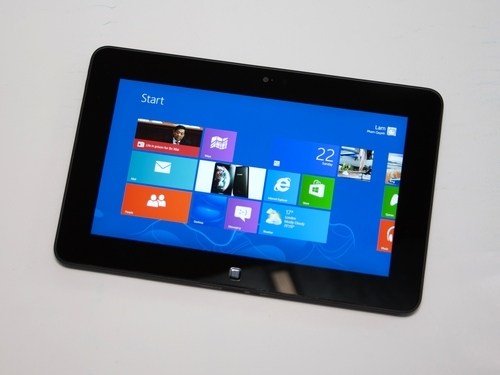

Tổng kết
Nhìn nhận thực tế:
Các thiết bị điện toán di động là một cuộc cách tân về công nghệ mà không ai có thể phủ nhận- chúng ta đã và đang chứng kiến sự chuyển giao mạnh mẽ giữa các giá trị truyền thống sang một trải ngiệm hoàn toàn mới và hợp thời hơn. Sự phát triển của các thiết bị mới mang lại những ưu thế vượt trội hỗ trợ tối đa cho con người trong cuộc sống hiện đại. Nhưng không vì thế mà chúng ta có thể mạnh mẽ khẳng định chúng có thể thay thế hoàn toàn các máy tính để bàn. Dường như đang còn quá sớm để khẳng định: 'PC sẽ chết cho các thiết bị điện toán cầm tay'.
Chúng ta đang thấy sự phát triển song song của hai lại thiết bị công nghệ này.Microsoft và các đối tác phần cứng đang làm tốt trong việc rút ngắn khoảng cách giữa PDA và laptop. Thế nhưng những chiếc máy tính bản Windows lại chưa bao giờ có cơ hội tiếp cận khách hàng. Chúng quá lớn để để trong túi, quá nặng để mang theo, quá mạnh và quá phức tạp cho những ứng dụng đơn giản như tạo ghi chú hoặc quản lý liên lạc, quá yếu cho những tác vụ tính toán cao cấp, và quá đắt cho một thiết bị thứ yếu của người dùng. Tuy iPad giải quyết được một số quan ngại này nhưng không phải thế mà nhu cầu thiết bị cầm tay tăng cao.

Hình 26: Máy tính bảng chạy trên hệ điều hành Windows 8.
Các số liệu năm 2010 cho thấy doanh số PC, laptop và máy chủ đã hồi phục đáng kể sau khi bị ảnh hưởng nặng nền bởi suy thoái kinh tế toàn cầu. Và như vậy, vẫn còn quá sớm để dự đoán ngành kinh doanh này sẽ ra sao. Tuy vậy, hầu hết các nhà phân tích đều có cái nhìn lạc quan hơn Jobs.
IDC dự đoán doanh số PC toàn cầu sẽ tăng ít nhất 20% trong năm 2010; trong khi Gartner dự báo là 22%. Còn hãng nghiên cứu thị trường NPD Group dự báo doanh số này sẽ tăng 30% trong năm tới. Phần lớn doanh số này là từ mảng PC, chứ không phải laptop. Theo Phó Chủ tịch NPD, Stephen Baker, doanh thu từ PC đã tăng nhanh hơn nhiều so với laptop trong những tháng gần đây.
Jobs kể lể với quan chức khác tại Hội nghị D8: Khi tôi muốn viết một báo cáo phân tích dài 35 trang, tôi chỉ muốn dùng bàn phím Bluetooth mà thôi. Nó giúp tôi tiết kiệm được khối thời gian'. Thế nhưng mấy ai có được sự may mắn như thế. Vấn đề về sự chênh lệch giữa các quốc gia, chênh lệch về mức sống của từng người sẽ vẫn còn tồn tại (ít nhất là trong vài thập kỉ nữa). Do đó máy tính để bàn vẫn có chỗ đứng cá nhân của nó trong thị trường công nghệ.
Hình 27: Đô thị ở Singapore và khu ổ chuột Jakarta
Chúng ta vẫn phải chấp nhận thực tế rằng “Con người buộc phải sử dụng xe tải song song với xe hơi”- ít nhất là trong một thời gian khá lâu nữa.
Hình 28: Nhìn nhận thực tế.
Dự đoán tương lai:
Những nhìn nhận trên được rút ra từ chính những số liệu trên thực tế. Nhưng còn về lâu dài, rất khó để chúng ta có thể dự đoán đúng về liệu rằng máy tình để bàn có thể bị thay thế hoàn toàn bởi các thiết bị điện toán di động hay không?
Công nghệ đang thay đổi từng ngày theo hơi thở của chúng ta. Sự tồn tại hay diệt vong của máy tính để bàn còn phụ thuộc và rất lớn vào sự phát triển của công nghệ, phụ thuộc vào cách mà nhà sản xuất chúng sẽ cải tiến hay không?
Hình 29: Liệu máy tính để bàn có thể bị thay thế hay không?
Chính mỗi người trong chúng ta cũng góp một phần không nhỏ trong tiến trình đi lên của công nghệ. Để làm được điều đó, chúng ta phải biết cách "làm chủ" nó từ bây giờ!